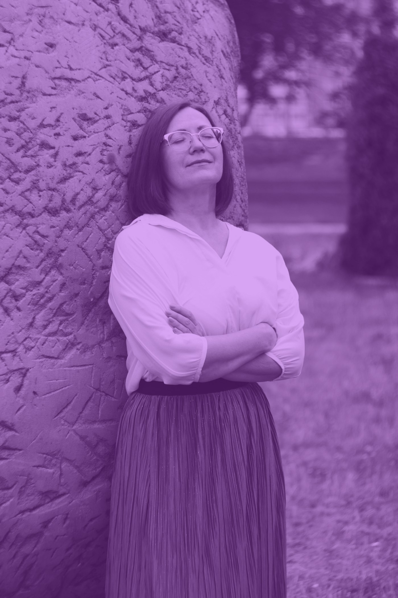

Ženské zdraví · Dlouhověkost
Women's Health: vitalita v kontextu longevity medicíny
Střední věk jako okno prevence, ne jako hormonální krize
Mgr. Ing. Tereza Vágnerová, Ph.D.
Co si dnes odnesete
Čtyři otázky. Na každou odpověď s uvedenou jistotou.
01
Co se děje?
Fyziologie přechodu, bez dramatizace.
02
Co je medicínsky důležité?
Kde se mění dlouhodobé riziko.
03
Co skutečně funguje?
A co se prodává, ale nefunguje.
04
Co můžu začít zítra?
Nástroje, jasně odlišené od doporučení.
02
Rámec
Tři věci, které se v debatě o menopauze míchají.
Léčba příznaků
Zmírnit to, co teď obtěžuje
Návaly, spánek, vaginální suchost, nálada. Cílem je kvalita života teď.
Prevence nemocí
Ovlivnit riziko na dalších 30 let
Srdce, metabolismus, kost a sval, mozek. Cílem jsou roky ve zdraví.
Nástroje chování
Jak to vůbec zavést
Koučovací pomůcky. Pomáhají s realizací, samy nejsou léčbou ani doporučením.
03
Rámec
Každé tvrzení dnes nese svou míru jistoty.
A
Doporučený postup
Shoda guidelines nebo vysoká jistota důkazů. Podle tohoto se rozhoduje.
B
Přiměřená jistota
Konzistentní data, ale slabší design nebo menší efekt. Rozumný postup.
C
Vznikající, nejisté
Zajímavé, ale nestavte na tom rozhodnutí. Data se mohou obrátit.
P
Praktický nástroj
Koučovací pomůcka. Není to důkaz ani zdravotnické doporučení.
04

Část první · Co se děje
Střední věk trajektorie nezakládá. Zviditelňuje je.
A to, co je vidět, se dá ovlivnit. Proto je tohle období prevenční okno, ne porucha.
05
Prevence · Staging
Menopauza je jeden den. Přechod je několik let.
B
Staging podle klinických kritérií
Pozdní reprodukční
Časná peri
Pozdní peri
Postmenopauza
Cyklus působí pravidelně, mění se ale jeho délka.
Změna délky cyklu o 7 a více dní.
Pauza 60 a více dní.
Menopauza je diagnóza zpětná: 12 měsíců po poslední menstruaci.
Kritéria stagingu dle ESE Clinical Practice Guideline 2025 a NICE NG23, aktualizace 4/2026
06
Prevence · Časování
Kdy to začíná a jak dlouho to trvá.
B
Kohortová data, široký rozptyl
~47 let
začátek perimenopauzy
První bývá změna délky cyklu, ne návaly.
4,5–8,5
roku trvá přechod
Nejobtížnější je kolísání, ne samotný pokles.
51,4
medián menopauzy (let), běžně 45–55
Pod 45 let časná menopauza, pod 40 let ovariální insuficience.
Časná menopauza a primární ovariální insuficience jsou samostatnou indikací k léčbě · ESE Clinical Practice Guideline 2025
07
Prevence · Proč teď
Po menopauze žijete víc než třetinu života.
B
Populační data, Eurostat
~30 let
života po menopauze
menopauza 51,4
63,4 roku ve zdraví
18,6 roku s omezením
Naděje dožití žen v ČR je 82,0 roku. O ty roky s omezením se hraje: prevence je nemá odložit, ale zkrátit.
Eurostat 2018, Czechia: ženy 82,0 roku naděje dožití, 63,4 roku healthy life years at birth · medián menopauzy 51,4 roku
08
Prevence · Fyziologie
Problémem není nízký estrogen. Problémem je nepředvídatelnost.
B
Longitudinální hormonální data
Reprodukční období
Vzorec se opakuje. Dá se na něj plánovat zátěž i regenerace.
Perimenopauza
Část cyklů je bez ovulace, takže chybí progesteronová fáze. Vzorec se neopakuje.
estradiol · progesteron · jedno vyšetření hormonů perimenopauzu nepotvrdí ani nevyloučí, diagnóza je klinická
09
Léčba příznaků · Co je časté
Návaly nejsou výjimka. Má je většina žen.
B
Podíl závisí na kohortě a definici
80 %
žen má návaly v pozdní fázi přechodu, podle kohorty 75 až 80 %
7,4
roku medián trvání, z toho 4,5 roku po poslední menstruaci
20–30 %
kvůli nim vyhledá lékaře
Co se hlásí dále
přerušovaný spánek
výkyvy nálad, úzkost
vaginální suchost, snížené libido
bolesti kloubů
zapomnětlivost, potíže se soustředěním
změna tělesného složení
Je to seznam běžných projevů přechodu, ne seznam nemocí. Pojmenovat je znamená umět je léčit.
SWAN, medián trvání vazomotorických příznaků 7,4 roku, u žen s raným začátkem i přes 11 let · UpToDate, Menopausal hot flashes, 2026
10
Léčba příznaků · Kalibrace
Příznaky má většina. Zatěžující jsou u asi čtvrtiny žen.
Nikdo nemusí nic léčit jen proto, že mu je 50. Kdo ale trpí, má nárok na účinnou léčbu, a nemusí se spoléhat na doplňky.
A
ESE guideline 2025
Lumsden MA et al., European Society of Endocrinology Clinical Practice Guideline, Eur J Endocrinol 2025;193(4):G49–G81: přibližně 25 % žen má zatěžující příznaky
11
Léčba příznaků · Evidenční karta
Zhoršuje přechod spánek?
B
Převážně observační data
Otázka
Je horší spánek v přechodu důsledek hormonů, nebo prostě věku a života?
Zjištění
Obtíže se spánkem uvádí 30–60 % žen ve středním věku, 15–25 % splňuje kritéria insomnie.
Interpretace
Spánek je potřeba léčit jako samostatný problém, ne čekat, že se spraví s návaly.
Limit
Observační data. Vliv věku, stresu a sociální situace nelze spolehlivě oddělit.
12
Prevence · Složení těla
Metabolismus se nezhroutí. Mění se ale složení těla, a to měřitelně.
B
Longitudinální kohorta SWAN
−0,2 kg
tukuprosté masy za rok
Ztráta svalu je ta část, která opravdu snižuje energetický výdej.
+0,45 kg
tukové hmoty za rok
A přesouvá se: ubývá na bocích, přibývá v pase.
Váha je slabý ukazatel
Sledujte obvod pasu, sílu a funkci. Ty se mohou zlepšovat i při stejné hmotnosti.
Ztráta svalu ale není automatická. Mění se citlivost svalu na zátěž a bílkovinu, a síla klesá dřív než hmota.
SWAN, Study of Women's Health Across the Nation: průměrná roční změna v přechodu, tukuprostá masa −0,5 %, tuková hmota +1,7 %
13

Část druhá · Co je medicínsky důležité
Přechod není jen období příznaků. Je to období, kdy se mění riziko.
Akcelerace dlouhodobého rizika nezávisle na chronologickém stárnutí. Okno zranitelnosti je zároveň okno ovlivnitelnosti.
14
Prevence · Mapa
Pět oblastí, kde se mění dlouhodobé riziko.
Estrogen
01
Srdce a cévy
Lipidy, tlak, riziko aterosklerózy.
02
Metabolismus
Viscerální tuk, inzulinová rezistence.
03
Kost a sval
Osteoporóza, síla, riziko pádů.
04
Mozek a psychika
Spánek, nálada, kognice.
05
Urogenitál
Suchost, bolest, kontinence, libido.
Všech pět se prolíná přes spánek, pohybovou zátěž a stravu. Proto se prevence nedělá po jednotlivých orgánech.
15
Prevence · Evidenční karta
Mění cholesterol menopauza, nebo jen věk?
B
Konzistentní observační data
Otázka
Zhoršuje se lipidový profil kvůli přechodu, nebo by se zhoršil i tak?
Zjištění
Stoupá celkový a LDL cholesterol a triglyceridy, klesá HDL. Vzorec přetrvává i po adjustaci na věk a adipozitu.
Interpretace
Lipidy měřit už v přechodu. Prahy nastavené na postmenopauzu riziko odhalí pozdě.
Limit
Observační data, ne randomizace. Kauzalita zůstává pravděpodobná, ne prokázaná.
Bonnes SLR et al., 2026 and Nutritional Advice, Curr Nutr Rep 2026;15:69
16
Prevence · Metabolismus
Riziko se posouvá dřív, než se posunou laboratorní prahy.
B
Jedno tvrzení na slidu je pouze C
Co je konzistentní B
Přibývá viscerální tuk a zhoršuje se inzulinová senzitivita. Obojí je klinicky významné a ovlivnitelné.
Co je jen signál C
Metabolomická signatura vyšších rozvětvených aminokyselin. Zajímavé, ale žádné opatření z toho dnes nevyplývá.
Co z toho plyne
Screening dělat dřív. Rozhodně ne omezovat bílkoviny kvůli nálezu z metabolomiky.
Curr Nutr Rep 2026;15:69 · vyšší rozvětvené aminokyseliny byly spojeny s budoucí inzulinovou rezistencí nezávisle na klasických rizikových faktorech
17
Prevence · Kost
Kost neubývá plynule. Ubývá ve dvou vlnách.
B
Kohortová a mechanistická data
1. fáze, perimenopauza. Nedostatek estrogenu zvyšuje odbourávání kosti.
2. fáze, 4 až 8 let po tranzici. Zpomaluje se novotvorba kostní hmoty.
První vlna se zpravidla prošvihne. Denzitometrii v ní nikdo neindikuje.
18

Prevence · Mozek
Spánek není komfort. Je to intervence do mozku.
Poruchy spánku jsou popisovány jako rizikový faktor rozvoje demence. Souvislost je ale observační a propletená s depresí, stresem a cévním rizikem.
C
Kauzalita nejistá, opatrně
Léčit spánek se vyplatí i bez kognitivního argumentu: nálada, tlak, glykemie, chuť k jídlu, výkon
19
Léčba příznaků · Psychika
Perimenopauza je období zvýšené zranitelnosti, ne diagnóza sama.
Rozladěnost z nevyspání není depresivní porucha. Pokud ale obtíže trvají a berou funkci, jde o diagnózu, která má účinnou léčbu.
B
Kohortová data, silná u rizikových žen
2–4×
vyšší riziko depresivní epizody v přechodu
Nejvíc u žen s depresí v anamnéze a s výraznými návaly a nočním pocením.
Kognitivně behaviorální terapie je doporučovaná jak na vazomotorické symptomy, tak na insomnii
20
Léčba příznaků · Urogenitál
Jediná skupina obtíží, která se sama nespraví. Naopak progreduje.
Suchost, bolest při sexu, urgence, opakované infekce. Lokální estrogen v nízké dávce je účinný, má minimální systémovou absorpci a lze ho užívat dlouhodobě.
A
NICE NG23 · ESE 2025
Nejlepší poměr účinku a rizika v celé menopauzální medicíně, a zároveň téma, na které se ženy ptají nejméně
21
Prevence · Co měřit
Prevence začíná u čísel, která znáte.
B
Intervaly se liší podle doporučení
Parametr
Jak často
Proč právě teď
krevní tlak
ročně, ideálně i doma
domácí měření předpovídá riziko lépe než jedno v ordinaci
lipidy
alespoň každé 2 roky
v přechodu se mění nezávisle na věku
glykemie nalačno nebo HbA1c
podle rizika
u rizikových žen bývá citlivější HOMA-IR
obvod pasu
doma, kdykoli
mění se dřív než hmotnost
Podle rizika, ne rutinně
denzitometrie
při indikaci
časná menopauza, fraktura, kortikoidy, nízká hmotnost
štítná žláza
při obtížích
příznaky se s přechodem překrývají
Konkrétní intervaly patří k vašemu lékaři, tenhle slide je vodítko, ne předpis · HOMA-IR jako citlivější marker: Curr Nutr Rep 2026;15:69
22
Prevence · Evidenční karta
Chrání hormonální léčba srdce a kosti?
A
Shoda guidelines 2025 a 2026
Otázka
Má se hormonální léčba brát kvůli prevenci chronických nemocí?
Zjištění
Je nejúčinnější léčbou návalů a je účinná na kost. Jako samostatná primární prevence se nedoporučuje.
Interpretace
Indikací jsou příznaky, časná menopauza a ovariální insuficience. Poměr přínosu a rizika je nejlepší do 60 let nebo do 10 let od menopauzy.
Limit
Riziko závisí na formě, dávce a cestě podání. Rozhodnutí je individuální a patří do ordinace.
NICE NG23, aktualizace 4/2026 · ESE Clinical Practice Guideline, Eur J Endocrinol 2025;193(4):G49–G81 · The Menopause Society, position statements
23
Část třetí · Co skutečně funguje
Na příznaky a na prevenci fungují jiné nástroje.
Když se to mísí, vznikají zbytečná zklamání i zbytečná rizika. Teď je rozdělíme.
24
Léčba příznaků · Hormonální léčba
Na návaly je nejúčinnější hormonální léčba. Není ale pro každou.
Kontraindikace a volba formy patří do ordinace. Pro ženy, které ji nemohou nebo nechtějí, dnes existují účinné nehormonální možnosti.
A
NICE NG23 · ESE 2025
25
Léčba příznaků · Evidenční karta
Lokální estrogen není systémová hormonální léčba.
A
Krátkodobě RCT, dlouhodobě jen observace
Otázka
Je vaginální estrogen stejné rozhodnutí jako tablety nebo náplasti?
Zjištění
U středně těžkých a těžkých urogenitálních obtíží je nízkodávkovaný vaginální estrogen nejúčinnější léčbou. Hladina estradiolu stoupne jen do nízkého postmenopauzálního rozmezí, ne do premenopauzálního.
Interpretace
Jiné rozhodnutí než systémová léčba: minimální systémová expozice. Neléčí návaly ani neřeší prevenci. Řeší to, co samo neodejde.
Limit
Dlouhodobé randomizované studie chybí. Observační data do tří let neukázala vyšší riziko nádoru prsu ani dělohy, koronární příhody, mozkové příhody ani trombózy.
UpToDate, Genitourinary syndrome of menopause: Treatment of vulvovaginal atrophy, 2026 · lze užívat i současně se systémovou léčbou
26
Prevence · Časná menopauza
Před čtyřicátým rokem je hormonální léčba prevence, ne volba.
A
Shoda guidelines, data z jiné populace
1 z 250
žen do 35 let
Primární ovariální insuficience není vzácnost.
1 z 100
žen do 40 let
Mezi 40 a 45 lety jde o časnou menopauzu.
do 51 let
trvání léčby
Cílem je nahradit chybějící roky estrogenu, ne zmírnit příznaky.
Data z WHI se na tuto skupinu nepřenášejí, ta studie sledovala ženy nad 60 let · UpToDate, Management of primary ovarian insufficiency, 2026 · ESE Clinical Practice Guideline 2025
27
Léčba příznaků · Nehormonální
Nehormonální možnosti, seřazené podle jistoty.
A
Position statement, úrovně důkazů
Doporučeno, úroveň I
- kognitivně behaviorální terapie
- klinická hypnóza
- SSRI a SNRI
- gabapentin
- fezolinetant
Slabší doporučení
- oxybutynin
- redukce hmotnosti
- stelátní blokáda
Nedoporučeno na návaly
- doplňky a bylinné přípravky
- sójové extrakty a equol
- dechová cvičení, chlazení, vyhýbání se spouštěčům
- jóga, mindfulness, akupunktura
- úprava jídelníčku
The Menopause Society, nonhormone therapy position statement · nedoporučeno na návaly neznamená nesmyslné obecně: pohyb, jóga i strava mají jiné a silné důvody
28
Léčba příznaků · Evidenční karta
Nová nehormonální léčba: cílí přímo na mechanismus návalů.
A
Studie fáze III, krátký horizont
Otázka
Existuje účinná léčba návalů bez hormonů?
Zjištění
Fezolinetant snížil frekvenci návalů o 50–65 %. Elinzanetant o 74 % ve 12. týdnu, navíc zlepšil spánek.
Interpretace
Reálná možnost tam, kde hormony nejde použít. Blokují neurální mechanismus, ne hormonální dráhu.
Limit
Chybí data nad 2 roky, odpověď je variabilní. Dostupnost a úhrada v ČR se mohou lišit.
SKYLIGHT 1 a 2, fezolinetant 45 mg denně · OASIS 1 a 2, elinzanetant, schválen FDA 10/2025 · u fezolinetantu se monitorují jaterní testy
29
Prevence versus léčba příznaků
Pohyb na návaly nezabírá. Na téměř všechno ostatní ano.
A
Přehledy pro obě tvrzení
Na návaly
Nedoporučeno pro tuto indikaci
Frekvenci ani intenzitu návalů pohyb v přehledech nesnížil. Nemá cenu od něj tohle čekat.
Na dlouhodobé zdraví
Jedna z nejsilnějších intervencí, které máme
Kardiovaskulární riziko, inzulinová senzitivita, kostní hustota, síla a funkce, spánek, nálada.
Když vám cvičení nezabralo na návaly, nefungovalo špatně. Chtěli jste od něj něco, co neumí.
30

Prevence · Dávka pohybu
Chůze se počítá. Chůze ale nestačí.
150–300
minut středně intenzivní aerobní aktivity týdně, nebo 75–150 minut vysoce intenzivní
2×
a více týdně posilování velkých svalových skupin. Tohle je věta, která se nejčastěji vynechává
Odporový trénink není doplněk k chůzi. Je to samostatná povinná složka.
A
Doporučení WHO
31
Prevence · Kost a sval
Kost reaguje na zátěž, ne na čas strávený cvičením.
B
Metaanalýzy intervenčních studií
2 × 8–12
série a opakování
Nejvýše 8–10 cviků na lekci, 2–3× týdně.
Progrese, ne rutina
Bez rostoucí zátěže nemá kost důvod se přestavovat. Přidávejte kilogramy, ne minuty.
Na spánek jiná dávka
Jóga, pilates, chůze a tai-či snižují závažnost insomnie. Jiný cíl, jiný recept.
Efekt na kostní denzitu je dávkově závislý: intenzita a zátěž jsou důležitější než délka trvání
32
Léčba příznaků · Spánek
U nespavosti je první volbou terapie, ne tableta.
Kognitivně behaviorální terapie insomnie má účinek srovnatelný s léky a na rozdíl od nich vydrží i po ukončení. Existuje i v digitální podobě.
A
První volba u insomnie
Pokud spánek boří noční pocení, léčte primárně ty. Bez toho KBT-I naráží.
33
Prevence · Spánek a složení těla
Stejný úbytek na váze. Úplně jiný výsledek.
B
Randomizováno, ale velmi malý vzorek
5,5 h spánku
14 dní
0,6 kg
2,4 kg tukuprosté hmoty
8,5 h spánku
14 dní
1,4 kg tuku
1,5 kg tukuprosté hmoty
úbytek tukové hmoty
úbytek tukuprosté hmoty
Celkem 2,9–3,0 kg v obou skupinách.
Nedeltcheva et al., Ann Intern Med 2010, n = 10 (3 ženy), 14 dní kalorické restrikce · Covassin et al., JACC 2022, n = 12: příjem +308 kcal/den, viscerální tuk +11 % · malé vzorky, pointa je kvalitativní
34

Část čtvrtá · Výživa
Menopauzální dieta neexistuje.
Existuje strava pro srdce, sval, kost a nutriční adekvátnost. Méně atraktivní nabídka, ale pravdivější.
35
Prevence · Rámec výživy
Výživa má v tomto období čtyři cíle. Hormony mezi nimi nejsou.
B
Přehledy 2026
01
Kardiometabolické zdraví
Lipidy, tlak, glykemie.
02
Sval a kost
Bílkoviny, vápník, vitamin D.
03
Tělesné složení
Obvod pasu, ne váha.
04
Nutriční adekvátnost
Pokrytí toho, co bývá nízké.
Curr Nutr Rep 2026;15:69 · Baraut MC, Nutrition during the menopausal transition, Clin Nutr ESPEN 2026;75:103405
36
Prevence · Vzorec stravování
Funguje vzorec stravování, ne jednotlivé potraviny.
B
Silné na metabolismus, slabé na návaly
Co je podložené B
Středomořský vzorec: zelenina, luštěniny, celozrnné, olivový olej, ryby. Konzistentní efekt na lipidy, tlak a glykemii.
Co je skromné C
Vliv stravy na samotné návaly. Efekt je malý a nekonzistentní. Neslibujte si od jídelníčku úlevu od návalů.
Alkohol zvlášť
Na návaly nejasné. Na riziko nádoru prsu a na spánek ale jasné. Mluvím o něm z tohoto důvodu.
37
Prevence · Bílkoviny
Bílkovina sama sval neudrží. Drží ho spolu se zátěží.
B
Guideline 1,0–1,2 · vyšší cíl je odhad
1,0–1,2
guideline B
1,2–1,6
praxe u aktivně posilujících C
0,8
1,0
1,2
1,6
1,8 g/kg denně
20–25 g
kvalitní bílkoviny na jídlo, rozložené do dne. Zdroje bohaté na leucin: mléčné výrobky, vejce, luštěniny, ryby. Doporučení ESPEN a ESCEO pro zdravé starší dospělé, cíl 1,2–1,6 je praxe, ne prokázaná hranice.
Doporučení ESPEN a ESCEO, citovaná v Curr Nutr Rep 2026;15:69 · anabolická odpověď na bílkovinu se zvyšuje odporovým tréninkem
38
Prevence · Kost a mikronutrienty
Pro kost nejde jen o vápník.
B
Dva prvky na slidu jsou pouze C
Co má oporu
- vápník 1 000–1 200 mg denně, přednostně z jídla: zakysané výrobky, sýry, sardinky s kostí, mák, sezam, tvrdé vody
- vitamin D 600–1 000 IU denně, u nás ho ze slunce a jídla nepokryjete
- bílkoviny a odporový trénink, stejně důležité jako minerály
Samotná suplementace vápníku a vitaminu D ale zlomeniny u všech žen nezabrání. Je to podmínka, ne intervence.
Co je nejisté a co už neprošlo
- kreatin monohydrát C, slibný na sílu a kognici
- magnezium C: vyšší příjem souvisí s vyšší denzitou, ale v kohortách nesnížil riziko zlomenin
- vitamin K2 B: menachinon-7 v dávce 375 µg denně přidaný k vápníku a vitaminu D úbytku denzity nezabránil ve tříleté randomizované studii
Pozor: potřeba železa po menopauze klesá. Rutinní suplementace bez vyšetření je chyba.
Curr Nutr Rep 2026;15:69 · Clin Nutr ESPEN 2026;75:103405 · u K2 jde o negativní nález v randomizované studii, ne o chybějící data
39
Léčba příznaků · Evidenční karta
Zmírní fytoestrogeny nebo probiotika návaly?
C
Slibné, ne prokázané
Otázka
Mají izoflavony ze sóji nebo probiotika nahradit léčbu návalů?
Zjištění
Izoflavony: efekt malý a nekonzistentní, extrakty a equol nedoporučeny. Probiotika: příznivé nálezy, ale vysoké riziko bias.
Interpretace
Sójové potraviny ano, jako dobrý zdroj bílkoviny. Sójové extrakty jako léčba návalů ne.
Limit
Heterogenní studie, krátké trvání, malé vzorky. Rozdíl mezi potravinou a extraktem je zásadní.
The Menopause Society, nonhormone therapy position statement · metaanalýza probiotik, Clin Nutr ESPEN, sedm studií, vysoké riziko bias
40

Část pátá · Co můžu začít zítra
Tohle už nejsou doporučení. Jsou to nástroje.
Koučovací pomůcky z metodiky Precision Nutrition. Neříkají, co je správné. Říkají, jak to zavést a jak vydržet.
P
Praktický nástroj, ne doporučení
41
Nástroj · Vytrvání
Léčba, kterou žena po roce nebere, nefunguje.
B
Observační data, ne randomizovaná
40–50 %
žen, které začnou hormonální léčbu, ji ukončí do jednoho roku
65–75 %
ji ukončí do dvou let, často bez konzultace s lékařem
Nejsou to čísla o účinnosti. Jsou to čísla o vytrvání. Stejně to platí pro pohyb, spánek i stravu.
UpToDate, Treatment of menopausal symptoms with hormone therapy, 2026, oddíl Stopping hormone therapy
42
Nástroj · Zavádění
Jedna změna v čase, dokud nedrží sama.
Typicky dva až čtyři týdny na jeden návyk. Kdo v lednu mění spánek, jídlo i trénink, má v únoru zpátky nic.
P
Koučovací nástroj
Test velikosti návyku
Na stupnici 1 až 10: jak jistě to zvládnu každý den?
9–10
Začněte.
≤ 8
Návyk je moc velký. Zmenšete ho, nesnažte se víc.
43
Nástroj · Porce podle ruky
Čtyři míry, které máte po ruce.
P
Koučovací nástroj, ne dávkování

Dlaň
Bílkoviny
U masa nebo tofu je porcí plocha a tloušťka dlaně. Prsty se nepočítají.
maso, ryby, tofu

Pěst
Zelenina
Objem sevřené pěsti slouží jako orientační míra porce zeleniny.
brokolice, mrkev, květák

Hrst
Sacharidy
Prohněte dlaň do mističky a spojte prsty. Co se do ní vejde, je porce přílohy.
rýže, brambory, těstoviny

Palec
Tuky
Objem celého palce od kořene ke špičce.
ořechy, olej, ořechové máslo
Stejný průvodce jako na webu, sekce Porce podle ruky · metoda hand measures dle Precision Nutrition · ilustrace nejsou kalibrovaná měřítka a počet kusů jídla na nich není návod k odměřování
44
Nástroj · Sytost a tempo
Jíst do 80 % sytosti a dát jídlu 20 minut.
Funguje hlavně tím, že zpomalí a zviditelní jídlo. Není to dávkování ani dieta. Nejlepší první návyk pro ženu, která má pocit, že musí začít vážit a počítat.
P
Koučovací nástroj, ne dávkování
45
Co konkrétně zítra
Dva týdny. Tři sloupce. Žádný doplněk.
Změřit
- krevní tlak
- obvod pasu
- týden spánku, jen zapisovat
Zavést
- jeden návyk, ne pět
- dva odporové tréninky týdně
- bílkovina do každého jídla
Probrat s lékařem
- příznaky, které berou funkci
- lipidy a glykemii
- možnosti léčby návalů
46
Rekapitulace
Kam patří co.
Léčba příznaků
hormonální léčba · lokální estrogen · kognitivně behaviorální terapie · nehormonální léky
Prevence nemocí
odporový trénink a aerobní zátěž · vzorec stravování · bílkoviny, vápník, vitamin D · spánek · tlak a lipidy
Nástroje chování
jeden návyk v čase · porce podle ruky · 80 % sytosti a pomalé jedení
Nikam jako první volba
doplňky a bylinné přípravky na návaly. Mají místo při doloženém nedostatku, ne jako léčba přechodu.
47
Zdravé stárnutí nezačíná po menopauze.
Příznaky se dají léčit, pokud berou funkci. Dlouhodobé riziko se dá ovlivnit, a to nástroji, které nikdo neprodává v lahvičce.
48
Zdroje
Z čeho tato přednáška vychází.
01
NICE NG23
Menopause: identification and management, 2026
02
ESE Clinical Practice Guideline
Eur J Endocrinol 2025;193(4):G49–G81
03
The Menopause Society
nonhormone therapy position statement 2023
04
The Menopause Society
position statements k hormonální léčbě
05
Curr Nutr Rep 2026;15:69
Bonnes SLR et al., 2026
06
Clin Nutr ESPEN 2026;75:103405
Baraut MC, Nutrition during the menopausal transition
07
UpToDate 2026
Menopause: Clinical features and diagnosis
08
UpToDate 2026
Menopausal hot flashes
09
UpToDate 2026
Treatment of menopausal symptoms
10
UpToDate 2026
Benefits and risks of MHT
11
UpToDate 2026
Genitourinary syndrome of menopause
12
UpToDate 2026
Management of primary ovarian insufficiency
Studie citované jmenovitě: SWAN · WHI · SKYLIGHT 1 a 2 · OASIS 1 a 2 · Nedeltcheva 2010 · Covassin 2022 · každé tvrzení nese stupeň jistoty A, B, C nebo P podle zdroje, ze kterého pochází
49
Děkuji za pozornost.
Mgr. Ing. Tereza Vágnerová, Ph.D.
Healthy Longevity Clinic
Klinika geriatrie a interní medicíny 1. LF UK a VFN
Klinika endokrinologie a metabolismu 1. LF UK a VFN
EFAD – European Federation of the Associations of Dietitians
Healthy Longevity Clinic
Klinika geriatrie a interní medicíny 1. LF UK a VFN
Klinika endokrinologie a metabolismu 1. LF UK a VFN
EFAD – European Federation of the Associations of Dietitians
tereza.vagnerova@lf1.cuni.cz · +420 774 355 768